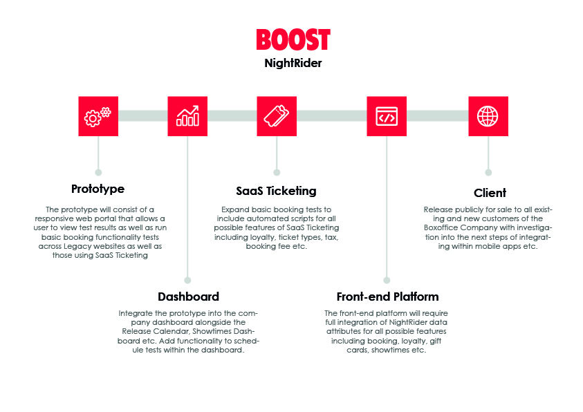

Automated Testing Platform
As an organisation, I want to be able to schedule automated tests for my cinema website tailored to my specific user journey without the need for a techincal background because I require peace of mind that everything is still working.
Company
The Boxoffice Company
Product
NightRider
Platform
Web
Create a test in minutes
NightRider Automation can be customised to suit the specific functionality of your online ticketing. Whether it's a movie launch or a special offer, your tests can notify you immediately when they detect a problem.

Discovery
NightRider was an automated testing platform designed specifically for testing cinema websites for the Boost devision of the Boxoffice Company. Tests covered everything from ticketing, concessions, seating, gift cards and loyalty accounts.
NightRider began solely as an internal project for the Boost Ticketing platform that was used by over 100 cinema chains worldwide. As they were all using the same plaform with custom features enabled on a client by client basis, I pointed out that automated tests could be used to ensure all the different scenarios were being tested with each deployment. After setting these up, these proved successful and it wasn’t long before I was asked to demo the tests to the CTO of a major cinema chain in the UK during a tour of our offices.
For developing the idea into a client facing interface, I was made responsible for conceptualising the product functionality, developing the product roadmap and designing the user flow and user interface.
Approach
As I already had the automated tests set up to cover the different scenarios running through the consol, the challenge then became developing the user interface that would enable users with less techincal abilities to use the product. I began by gathering requirements from both cinemas and the QA team to identify the use cases.
1. It would need to be used internally for scheduling tests for multiple cinemas
2. It would need to be used externally for scheduling tests for individual cinemas
3. It would need to be used both internally and externally for viewing and comparing test results.
I then reviewed existing automated testing platforms to get an idea of the user flow. This allowed me to prioritise the roadmap based on what I currently had vs what I considered to be a finished product. This was broken down in such a way that would allow me to release parts of the product sooner rather than later but would also allow for me to scale it up as it grew.

Results
NightRider proved to be a successful internal tool for basic tests that showed great potential of becoming an external product we could sell to the masses. Unfortunately, before we were able to expand on it further, the COVID pandemic hit cinemas worldwide and the company were no longer able to invest in the product as they moved their focus towards trying keep cinemas open.